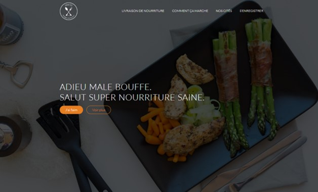
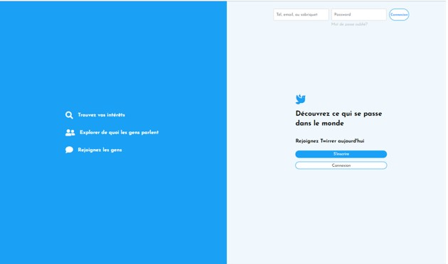
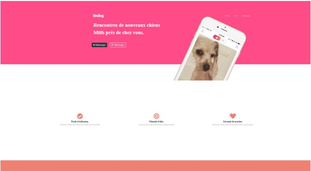
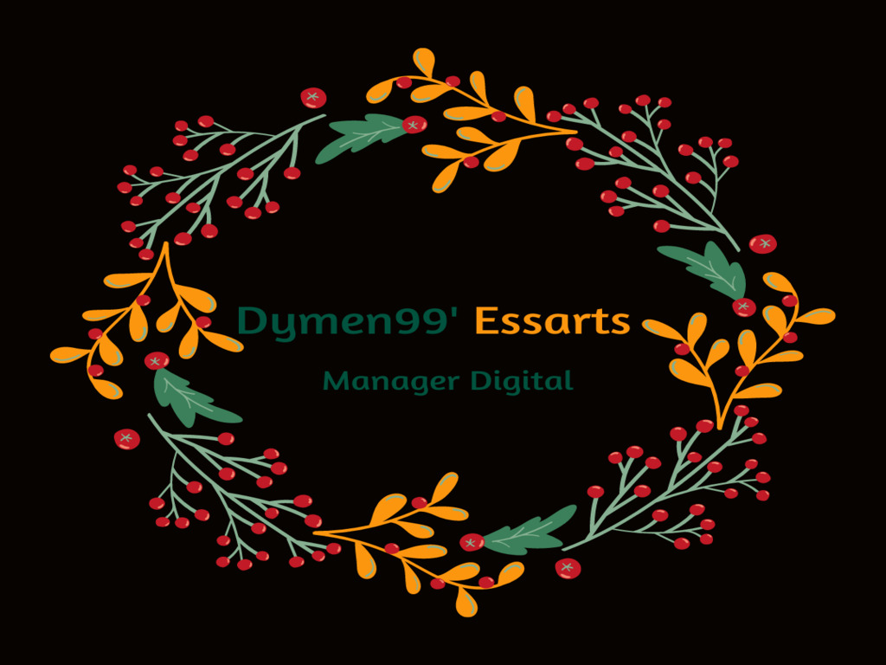

-

Cliquez ici et découvrez mon site de restauration rapide.
-

Jouer avec les modes de fusion dans Photoshop... Cloon de Twitter, cliquez, vous serez dirigé vers Twirrer un cloon de twitter fait en html5/css3 et javascript.
-

Essayer de créer un style de lueurs des années 80... Dirigez-vous en cliquant vers mon projet de site de rencontres pour chiens Tindog.
-

Gouttes créées à l'aide de pinceaux Photoshop... Et cette belle image vous mènera vers mon Linkedin.
-
Équipier d'intervention incendie industriel, dernier emploi chez Airbus. Cliquez pour voir en quoi consiste ce travail en industrie
-

Un peu de graphisme qui vous dirigera vers mon book.